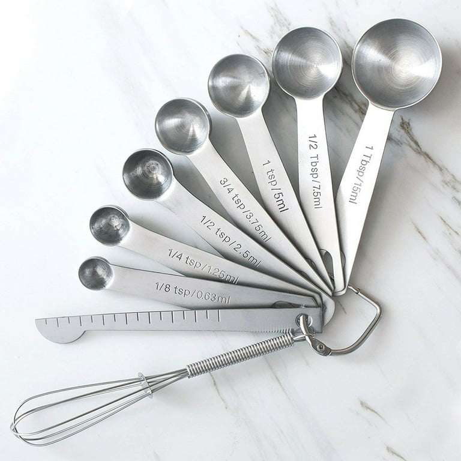

I used to think that if a recipe called for a 9-inch round pan, I could just use an 8-inch square pan and call it close enough. Then I made a batch of brownies that came out about a half-inch thick and burned around the edges. The same batter in the right pan would have given me nice thick brownies. I learned that day that pan shape changes everything.
The problem is that most people only think about volume. Does the batter fit? That's one question. But the more important question is how the batter spreads out. That's about area, not volume.
Let me explain with numbers. A 9-inch round pan has an area of about 64 square inches. An 8-inch square pan also has about 64 square inches. Same area. That's why they're often interchangeable. The brownies will be the same thickness in both pans. But a 9x13 rectangular pan has 117 square inches, almost double the area. The same batter will be half as thick, bake faster, and have a different texture.
When you scale a recipe, you need to think about both the volume and the area of your pans. If you're doubling a recipe, you might need to use a pan with twice the volume. But if you just double the pan size in one dimension, you'll change the area and the thickness will be off.
I have a formula I use now. Start with the original pan's area. Calculate it. Then figure out the area of your substitute pan. The ratio of the areas tells you how thick the batter will be. If the substitute pan has twice the area, the batter will be half as thick. That means you need to reduce the baking time and watch closely so it doesn't burn.
The volume formula is different. Volume tells you how much batter the pan can hold without overflowing. A pan's volume is area times depth. So two pans can have the same area but different depths, and the deeper pan will hold more batter. That matters when you're scaling up. If you increase the recipe by 50%, you need a pan with 50% more volume. But you might get that volume from a deeper pan rather than a wider one. That changes the baking time but not the thickness.
I once scaled a cake recipe from 2 layers to 4 layers. I kept the same pan size, just made two batches. That worked fine. But then I tried to scale from 2 layers to 3 layers using a deeper pan. The pan had the same area but was 50% deeper. The cake took much longer to bake and the center was underdone while the edges were overdone. I should have used two pans instead of one deep pan.
The lesson is that depth is not your friend. Heat penetrates slowly. A batter that is 2 inches deep bakes in 30 minutes. A batter that is 3 inches deep might take 50 minutes, and the outside might burn while the inside is still raw. When you scale a recipe, it's almost always better to use more pans rather than deeper pans.
Here's a table I've memorized for common pan areas. A 9-inch round is 64 square inches. An 8-inch round is 50. A 10-inch round is 79. A 12-inch round is 113. An 8-inch square is 64. A 9-inch square is 81. A 10-inch square is 100. A 9x13 rectangle is 117. A quarter sheet pan, which is 9x13, same as a 9x13. A half sheet pan, which is 13x18, has 234 square inches.
When I need to substitute a pan, I look at the area first. If the areas are within 10%, I consider it a direct swap with maybe a small time adjustment. If the area difference is larger, I adjust the recipe.
Let me give you an example. A recipe calls for a 9-inch round pan, 64 square inches. You only have a 9x13, 117 square inches. That's about 83% more area. Your batter will be much thinner. To compensate, you could make 1.83x the batter to get the same thickness. Or you could keep the batter the same and accept thinner brownies. That's a choice, not a mistake.
I once used a half sheet pan for a recipe that was meant for a 9x13. The batter was so thin that it baked in 12 minutes instead of 30. The edges were crispy like crackers. It wasn't what the recipe intended, but it was still delicious. I just called them "crispy brownies" and everyone loved them.
The math gets more complicated when you're scaling the recipe and changing the pan at the same time. You have to consider both the scaling factor and the pan factor.
Here's my process. First, calculate the original pan volume. Original volume times your scaling factor gives you the volume of batter you'll have. Then find a pan or combination of pans that can hold that volume without exceeding 2/3 full. Then calculate the area of those pans. The area ratio tells you how thick the batter will be compared to the original. Adjust baking time accordingly.
It sounds complicated, but after you do it a few times, it becomes second nature.
I built a tool that does all this math for you.
Another mistake is forgetting that different materials conduct heat differently. Glass pans insulate, so the edges don't brown as fast. Dark metal pans absorb more heat, so the edges brown faster. When you substitute a pan, consider the material. If you're switching from light metal to dark metal, reduce the oven temperature by 25°F. If you're switching from metal to glass, increase the temperature by 25°F or bake longer.
I learned this when I made a pie in a glass dish instead of metal. The crust was soggy on the bottom because glass doesn't conduct heat as well. Now I adjust for material.
For scaling, the material matters more when you're changing pan sizes. A large glass pan might have hot spots that cause uneven baking. I prefer metal for large batches because it's more predictable.
The most important thing to remember about pan math is that it's not exact. Batter behaves differently depending on the recipe. A runny batter will spread more than a thick batter. A batter with a lot of sugar will brown faster. Use the math as a starting point, then watch the oven and use your senses.
I always set my timer for the minimum suggested time, then check every few minutes after that. Toothpick tests, visual cues, and smell are more reliable than any calculation.
The brownie disaster that started this whole journey for me? I still think about it sometimes. If I had known about area and volume, I would have used two 8-inch square pans instead of one 8-inch square pan for a double batch. The brownies would have been the right thickness. But I didn't know. So I ended up with burnt edges and a gooey center.
Now I know. And I'm sharing it with you so you don't have to learn the hard way.
— Olivia
P.S. My kids now fight over the crispy edge pieces when I bake in the wrong pan. They call them "crunchy brownies" and prefer them to the normal ones. So maybe my mistake was actually a discovery.